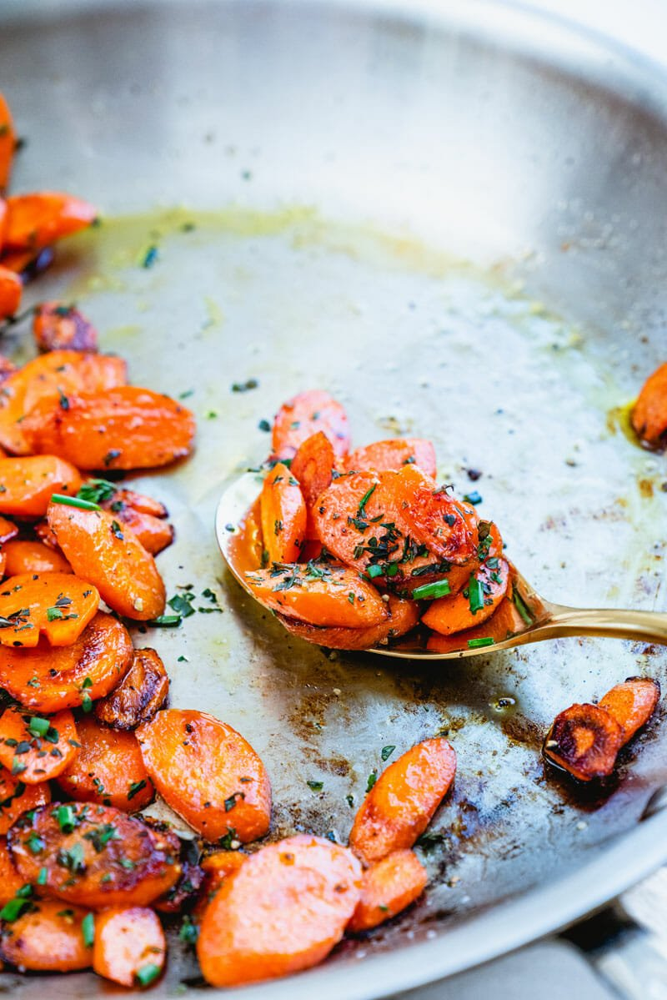
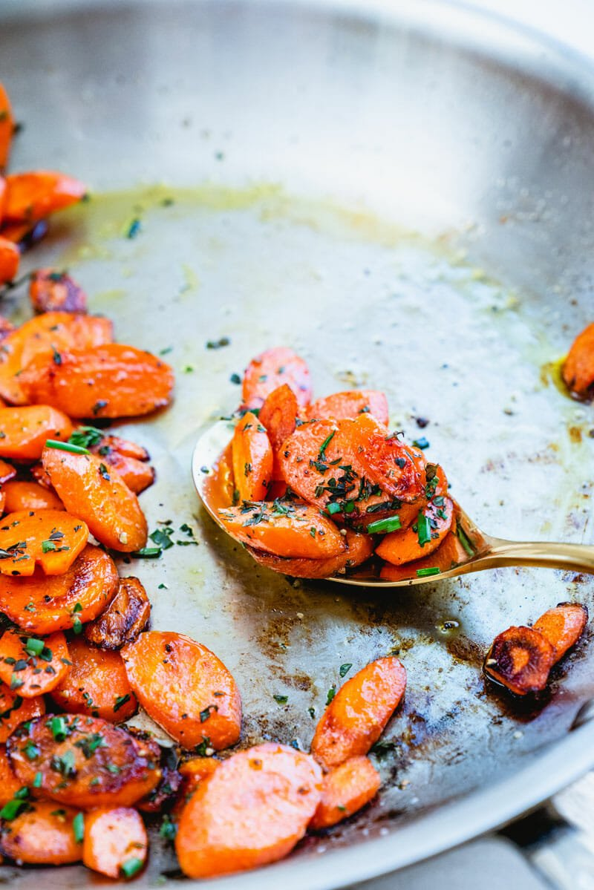

Sanguine Sauteed Carrots
 

Description
Have you ever wondered how to have more vegetables on a day-to-day basis? Sauteed carrots are the perfect side dish, providing veggies when you might not have them prepared. They're very simple, and have a very unique taste: they are tender, buttery, and savory, with a hint of herbaceous fresh thyme. They're probably going to taste like the best carrots you’ve ever had: but they only have 4 ingredients! Here's how to make them!
How Much Thyme Will It Take?
10 Minutes
Ingredients
- 8 Medium-Sized Carrots
- 2 Tablespoons Olive Oil
- 1 Tablespoon Chopped Fresh Thyme
- 1/2 Teaspoon Kosher Salt
Steps
- Peel And Cut: Peel the carrots and slice them diagonally into nice rounds, so that they look natural but are also of a good shape.
- Cover And Cook: Heat the olive oil in a large skillet over medium high heat, then add your carrots and cover them. Then comees the part that's different from most sauteed vegetables: you won't be stirring for 3-4 minutes! This helps to keep moisture inside the pan, making your carrots taste better.
- Stir: Now comees the actuall saute: remove the lid, add your kosher salt, and start stirring the carrots. Continue to saute for 3 to 4 minutes until browned, then remove the pan from the heat and stir in your fresh thyme. Add in a few more pinches of kosher salt, then enjoy!